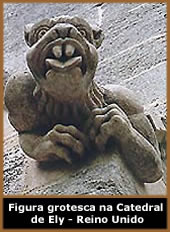

Quimeras
Remontam, pelo menos, à Antiguidade
Clássica os exemplos de várias figuras mitológicas,
muitas vezes deuses ou semideuses, que retratavam entes híbridos,
ou seja, uma combinação de outros seres, os quais
eram dotados de determinados atributos ou simbolizavam qualidades
específicas.
Por
exemplo, são sobejamente conhecidas as esfinges egípcias,
figuras enigmáticas com cabeça humana e corpo de
leão; entre os Assírios encontramos os touros alados
(corpo de touro, com asas e cabeça humana); um motivo tipicamente
persa era o leão com asas e cornos de bode; entre os Hebreus
podemos encontrar os querubins (esfinges aladas que surgem abrigando
sob as asas a Arca da Aliança, no Templo de Salomão);
os antigos Gregos nutriam especial predileção pela
Quimera, uma criatura com cabeça de leão (símbolo
do poderio helênico) que exalava fogo pela boca, tinha o
corpo de uma cabra e cauda de serpente – essa designação
acabou por ser adotada para designar genericamente outros tipos
de seres fantásticos, cujos corpos eram a combinação
de dois ou mais animais conhecidos. Assim, e ainda na mitologia
grega, surgem, entre outros, as hárpias (que tinham cabeça
e torso de mulher, pernas e cauda de ave e também asas),
os sátiros – cujos equivalentes romanos eram os faunos
– (com torso humano, cabeça com cornos, e a metade
inferior do corpo semelhante à de um bode), os centauros
(parte homens, parte cavalos) ou os grifos (com cabeça,
bico, asas, torso e patas dianteiras semelhantes às de
uma águia, mas com orelhas, quartos traseiros e cauda de
leão), os quais podemos igualmente encontrar entre os Persas.
Enfim, são numerosas, embora muitas vezes
baseadas em idênticos temas, as imagens que reuniam as características
destas figuras híbridas e que foram adotadas por diferentes
povos, sendo quase certo as mais antigas terem influenciado as
seguintes, mesmo em espaços geográficos relativamente
distantes.
Mas qual era a função de tais imagens?
Uma das explicações que parece reunir maior consenso
é a de que serviriam como "guardiãs",
protegendo das influências maléficas os locais onde
estavam implantadas.
Uma vez que, em vários casos, estas quimeras
antigas representavam divindades ou heróis míticos
com poderes sobre-humanos, esse papel protetor sobressai assim
como um motivo plausível para que tenham sido retratadas
das mais diversas formas: em pequenos artefatos, em jóias
ou amuletos, em recipientes e escudos, quer pintadas, quer esculpidas,
surgindo tanto em templos como em edifícios laicos e até
mesmo em casas particulares.
Gárgulas
Crê-se que as chamadas gárgulas, figuras
por vezes igualmente quiméricas, começaram por ser
aplicadas para embelezar os orifícios por onde as águas
escorriam dos telhados para o chão.
Sabe-se que já em algumas edificações
gregas, ao longo dos rebordos dos telhados inclinados, nas
extremidades destes e, eventualmente, também ao longo das
paredes, existiam pequenas caleiras para recolha da água
das chuvas, que era canalizada para orifícios por onde
se escoava. Em alguns casos, a água era conduzida para
baixo por uma conduta, cuja extremidade inferior encaixava por
detrás da escultura de uma cabeça de leão,
de modo que a boca jorrasse a água para longe (mais uma
vez a figura do leão surge como protetora não só
contra os inimigos terrenos, como contra espíritos malignos).
Mas seria sobretudo na época medieval, mais
precisamente no período entre os séculos XII e XV,
a partir da construção das grandes catedrais góticas,
que as gárgulas viriam a popularizar-se na Europa Ocidental,
principalmente na França, embora também na Inglaterra
e, em menor escala, em outros países. Porém, nessa
altura, as temáticas representadas tinham já recebido
influências de outros povos e culturas, como os Celtas e
os Normandos, muito embora sob o olhar atento da Igreja de Roma.
Segundo parece, as gárgulas começaram
por ser peças em madeira ou cerâmica. Porém,
só após se ter generalizado o uso da pedra para
essa finalidade (sobretudo o calcário ou o mármore,
embora tenham também existido esculturas em terracota,
que não chegaram aos nossos dias) é que surgiu a
possibilidade de passar a esculpir as figuras com maior riqueza
de pormenor. São igualmente conhecidos alguns exemplos,
relativamente raros, feitos em metal.
Quando
nos referimos às gárgulas, talvez nos venha à
mente as numerosas criaturas grotescas que podemos encontrar na
catedral parisiense de Notre-Dame – incontornável
exemplo clássico, inspirador de histórias que incluíam
personagens como Quasímodo, o famoso corcunda, criado pelo
romancista francês Victor Hugo.
Tal como sucedia nas construções
gregas, um dos motivos mais correntemente apontados para a utilização
das gárgulas refere a necessidade, em termos de conservação
das obras arquitetônicas, de fazer com que a água
das chuvas que se abatiam sobre os edifícios fosse captada
após escorrer pelas paredes, conduzida por caleiras que
separavam essas escorrências em várias direções,
e levando a que fossem projetadas para longe das paredes e fundações
no exterior das construções, evitando assim que
se infiltrassem no solo junto aos alicerces, onde acabariam por
dissolver as argamassas e arruinar as alvenarias, ou que desgastassem
as pedras exteriores, trazendo perigo à estabilidade da
construção.
Para que essas tão necessárias goteiras,
que seriam protuberâncias inestéticas destacadas
visivelmente nas esquinas, não destoassem no conjunto harmônico
de toda a edificação, teria então surgido
a hipótese de as ornamentar com esculturas. Porém,
pelo menos de início, isso só acontecia nos edifícios
de maior porte ou nas construções pertencentes aos
mais abastados, já que se tratava de um tipo de trabalho
bastante caro para a época – à semelhança
do que ocorria com outras figuras no interior dos templos, as
gárgulas também eram ricamente pintadas e algumas
chegavam a receber ornamentos dourados.
As figuras grotescas
O termo grotesco – sob o qual são
frequentemente englobadas tanto as quimeras (já pouco mais
que decorativas, durante a Idade Média) como as gárgulas
(exclusivamente aplicadas nas saídas de água) e
ainda outras figuras monstruosas exibidas também no interior
dos edifícios – só se generalizou durante
o Romantismo.
É possível classificar estas figuras
como sendo antropomórficas (aquelas em que é retratada
a figura humana) ou zoomórficas (aquelas que representam
animais), bem como detectar a sua evolução ao longo
dos séculos.
Embora
seja difícil datar com precisão quando muitas das
gárgulas foram esculpidas, é fácil constatar
que, gradualmente, começou a desenhar-se uma preferência
por formas alongadas (com as mais recentes projetando-se para
fora cerca de um metro em relação às paredes
em que se apóiam). Nota-se igualmente, a partir do século
XIII, uma maior tendência para retratar figuras humanas
em vez de animais e também uma maior ênfase no detalhe.
Mais tarde acentuam-se a sua fealdade e o seu caráter disforme
e assustador, que acabará por se ir tornando menos demoníaco
e mais caricatural, característica que haveria de conduzir
à noção de grotesco, dado o exagero nas poses
e expressões dos personagens. Verifica-se também
que as temáticas vão sendo cada vez menos religiosas
e mais mundanas. Contudo, continua por explicar a opção
por este tipo tão peculiar de figuras, não existindo
consenso a este respeito entre os que se dedicam ao estudo da
arquitetura gótica européia.
Por exemplo, relativamente ao emprego das gárgulas
durante a Idade Média, muitas das fontes que se debruçam
sobre o tema começam por mencionar a própria designação
de gárgula. Uns afirmam que a palavra que se refere ao
gorgolejar da água quando passa através de um orifício;
outros alvitram que provém do termo latino gorgulio, ou
do francês gargouille, ambos significando garganta. Esta
última tese tem ainda em seu apoio a Lenda de La Gargouille.
Rezava uma história popular medieval que, no século
VII, vivia na região de Paris, numa gruta próxima
do Rio Sena, um dragão apelidado La Gargouille, com o hábito
de sair do seu covil para engolir barcos e pessoas. Os aldeões
locais viviam aterrorizados e todos os anos sacrificavam uma vítima
ao dragão, numa tentativa de o apaziguar. O povo acabaria
por ser salvo por um padre, que prometeu derrotar o dragão
se aí fosse erguida uma igreja e se todos os habitantes
concordassem em ser batizados. Após um combate decisivo
o dragão foi derrotado e o padre arrastou o corpo do monstro
para a aldeia, onde lhe lançou fogo. Porém, a cabeça
e pescoço do dragão não arderam, pelo que
acabaram por ser colocados numa parede da igreja.
Mas, para além desta lenda, que não
esclarece muito em relação à exibição
das gárgulas e quimeras nos edifícios medievais,
particularmente os religiosos – sobretudo se tivermos presente
que, de início, muitas destas figuras eram de inspiração
pagã e pré-cristã – há outras
tentativas de explicação para este fenômeno.
Alguns
investigadores defendem a idéia de que, tal como na Antiguidade,
a função destes seres grotescos era a de protetores.
O seu aspecto assustador teria como finalidade manter à
distância dos edifícios (e daquilo que continham)
as forças do mal e os seus emissários, nomeadamente
o Demônio e seus algozes. Outra idéia, talvez algo
inesperado, é a de que as carrancas não pretenderiam
assustar, mas seriam sim uma expressão aterrorizada das
próprias figuras após terem presenciado algo de
sinistro. Outra idéia ainda, e que goza de bastante aceitação,
é a de que, numa época em que poucos sabiam ler,
era importante ensinar ao povo, recorrendo às imagens,
os preceitos cristãos, nomeadamente dando-lhes a conhecer
aquilo a que ficavam sujeitos aqueles que se desviassem dos caminhos
da verdadeira fé (note-se que, nessa época, as deformidades
físicas eram tomadas como castigos divinos por pecados
praticados, ou como provas de que aqueles que delas padeciam tinham
pactuado com as forças das trevas – uma justificação
adicional para o aspecto grotesco e exagerado de algumas representações).
Contudo, esta tese tem também pontos fracos: um deles é
o fato de os grotescos surgirem igualmente em edifícios
laicos e em casas particulares; um outro é o de as imagens
não estarem de acordo com o padrão comum às
restantes representações religiosas típicas
do período em questão. No entanto, parece haver,
por exemplo, uma relação simbólica entre
os sete pecados mortais e alguns dos animais representados –
orgulho/leão, inveja/serpente, ira/javali, preguiça/burro,
ganância/lobo, gula/urso e luxúria/porco –,
pelo que a sua observação freqüente poderia
levar os fiéis a refletirem sobre as respectivas condutas.
Por fim, há também quem seja de opinião
de que é pouco provável que se consigam extrair
ensinamentos com significado religioso de muitas das figuras,
nomeadamente daquelas que são antropomórficas, realizadas
já durante a fase final do período gótico.
Nestas sobressaem sobretudo as caretas e posturas corporais mais
ridículas e menos assustadoras, motivo pelo qual se julga
que poderiam ser uma forma de chacota relativa à personagens
locais, de crítica social ou dos costumes da época.
Outra peculiaridade que tem intrigado os estudiosos
é a questão de, estando as gárgulas e quimeras
habitualmente colocadas num plano bastante elevado e em recantos
por vezes quase invisíveis a partir do solo, por que é
que foram esculpidas com tão grande preocupação
e riqueza de detalhes? Uma das explicações avançadas
refere que, sendo estas esculturas realizadas para glorificar
o Senhor, como, de resto, todas as catedrais góticas, e
estando, para além disso, colocadas tão alto (e
assim mais próximas dos Céus), Deus poderia mais
facilmente aperceber-se da perfeição do trabalho
feito.
Enfim, muito mais poderia ser dito acerca destas
curiosas figuras, nomeadamente no que diz respeito a numerosas
personagens que surgem repetidamente, e cujo estudo aprofundado
revela influências das mais variadas origens, quer geográficas,
quer culturais. Certo é que, embora tenham perdido a carga
simbólica que tiveram outrora, ainda hoje mantêm
o seu fascínio, continuando a ser aplicadas como ornamento
em várias construções, e não deixa
de ser empolgante para muitos tentarem decifrar os mistérios
que parecem obstinadamente encobertos...
Por Luís
Afonso
Extraído
e adaptado de www.revista-temas.com
Bibliografia:
"Gargoyles and Other Monsters in Norman and Gothic English
Style"
Texto do site:
www.ulrikehoinkis.de